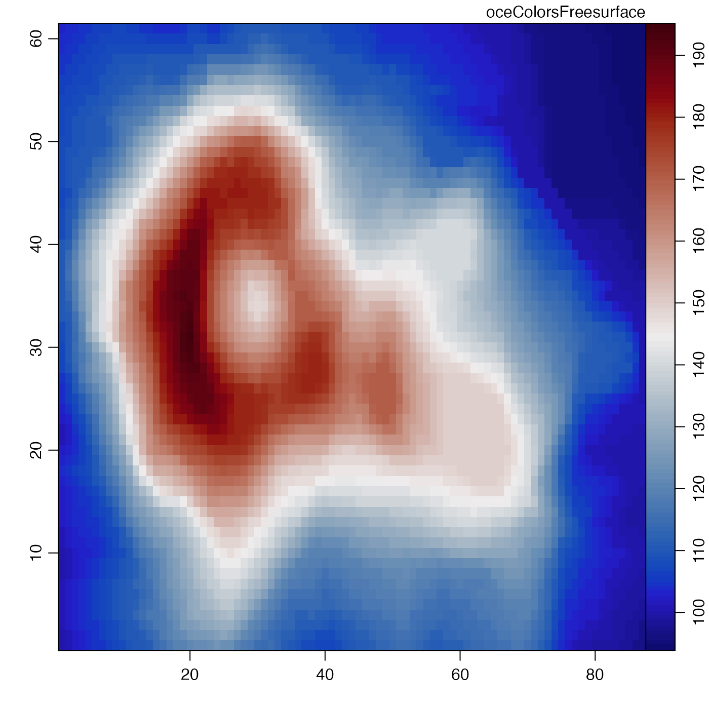

Create a set of colors for displaying freesurface values,
based on the scheme devised by Thyng et al. (2016) and
presented in a python package by Thyng (2019).
The color specifications were transliterated from
python to R on 2015-09-29, but have not been adjusted
since, even though the python source has changed. This
is to prevent breaking old oce code. To get the
latest versions of these colours or other colours,
use the cmocean R package
(Thyng, Richards, and Krylov, 2019) directly, as is
illustrated (with the "matter" scheme) in Example 2.
Note that the cmocean core functions provide a way
to select between various versions of the colour schemes.
It is also worth considering the palettes provided by the
viridis package, as illustrated (with the
"inferno" scheme) in Example 3.
oceColorsFreesurface(n)number of colors to create.
A vector of color specifications.
Thyng, Kristen, Chad Greene, Robert Hetland, Heather Zimmerle, and Steven DiMarco. “True Colors of Oceanography: Guidelines for Effective and Accurate Colormap Selection.” Oceanography 29, no. 3 (September 1, 2016): 9–13. doi:10.5670/oceanog.2016.66
Thyng, Kristen. Kthyng/Cmocean. Python, 2019.
https://github.com/kthyng/cmocean.
Thyng, Kristen, Clark Richards, and Ivan Krylov.
Cmocean: Beautiful Colour Maps for Oceanography (version 0.2), 2019.
https://CRAN.R-project.org/package=cmocean.
The following references provide information on choosing colour schemes, that are suitable for viewers who have colour deficiencies.
Light, Adam, and Patrick J. Bartlein. "The End of the Rainbow? Color Schemes for Improved Data Graphics." Eos, Transactions American Geophysical Union 85, no. 40 (2004): 385. DOI: 10.1029/2004EO400002
Stephenson, David B. "Comment on 'Color Schemes for Improved Data Graphics', by A Light and P.J. Bartlein." Eos, Transactions American Geophysical Union 86, no. 20 (2005): 196. DOI: 10.1029/2005EO200005
Light, Adam, and Patrick J. Bartlein. "Reply to 'Comment on Color Schemes for Improved Data Graphics,' by A. Light and P.J. Bartlein'." Eos, Transactions American Geophysical Union 86, no. 20 (2005): 196–196. DOI: 10.1029/2005EO200006
Other things related to colors:
colormapGMT(),
colormap(),
oceColors9B(),
oceColorsCDOM(),
oceColorsChlorophyll(),
oceColorsClosure(),
oceColorsDensity(),
oceColorsGebco(),
oceColorsJet(),
oceColorsOxygen(),
oceColorsPAR(),
oceColorsPalette(),
oceColorsPhase(),
oceColorsSalinity(),
oceColorsTemperature(),
oceColorsTurbidity(),
oceColorsTurbo(),
oceColorsTwo(),
oceColorsVelocity(),
oceColorsViridis(),
oceColorsVorticity(),
ocecolors
library(oce)
# Example 1
imagep(volcano, col=oceColorsFreesurface(128),
zlab="oceColorsFreesurface")

if (FALSE) {
# Example 2 (requires the cmocean package)
imagep(volcano, col=cmocean::cmocean("matter"),
zlab='cmocean::cmocean("matter")')}
if (FALSE) {
# Example 3 (requires the viridis package)
imagep(volcano, col=viridis::inferno,
zlab='viridis::inferno')}